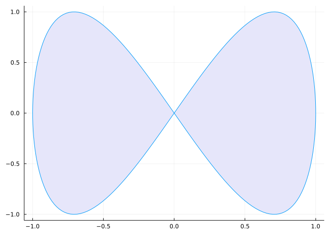

using Plots
plot(sin,
x->sin(2x),
0,
2π,
leg=false,
fill=(0,:lavender))
Plot function pair (x(u), y(u)). See Figure 1 for an example.
---
title: "Learn Julia"
jupyter: julia-1.8
---
## 画图预览
Plot function pair (x(u), y(u)).
See @fig-parametric for an example.
```{julia}
#| label: fig-parametric
#| fig-cap: "Parametric Plots"
using Plots
plot(sin,
x->sin(2x),
0,
2π,
leg=false,
fill=(0,:lavender))
```
## 查看变量类型
```{julia}
x = 10
typeof(x)
```
## 多项式支持
```{julia}
2x^2 - 3x + 1
```
## 向量化操作
```{julia}
[1, 2, 3] .^ 3
```
## 类型转换
```{julia}
x = 1.5
round(x)
```
```{julia}
Int(round(x))
```
## 函数
```{julia}
∑(x, y) = x + y
∑(1, 2)
```
### 函数可以包含类型
```{julia}
function ∑(x::Integer, y::Integer)::Integer
x + y
end
∑(1, 2)
```
### 没有返回值 return noting
```{julia}
function printx(x)
println("x = $x")
return nothing
end
```
### 匿名函数
```{julia}
map(
x -> x^2 + 1,
[1, 2, 3]
)
```